3. The Universal Context of Life#
Jun 02, 2026 | 16028 words | 80 min read
How to use this chapter
This chapter places the search for life in a cosmic setting. Focus on three connected questions: Where are we in the universe? What is the universe made of? How did our Solar System become a place where at least one living planet exists? The goal is not to memorize every scale, object, or term. The goal is to build a mental map that connects astronomy, chemistry, energy, and planet formation to the scientific search for life beyond Earth.
When we ask whether life exists elsewhere, we are really asking a set of connected scientific questions. What kinds of places exist in the universe? What raw materials are available there? How old are those places? What physical laws shape them? What evidence could tell us whether a distant world is merely habitable, meaning that it could support life, or actually inhabited, meaning that life is present there?
Modern astronomy gives astrobiology its stage. Astrobiology is the scientific study of life in the universe, and it depends on astronomy, biology, chemistry, geology, planetary science, physics, mathematics, and computer science. Earth remains the only confirmed example of life, so we begin with what Earth teaches us. But the setting for Earth is much larger than Earth. Earth is one planet around one star, in one galaxy, in a universe that contains many galaxies and many generations of stars.
This chapter develops that context in three steps. First, we build a cosmic address and a sense of astronomical scale. Second, we review the matter, energy, and light that make astronomical evidence possible. Third, we examine the Solar System as our local laboratory for understanding planet formation and the conditions that may lead to life.
3.1. The universe and life#
3.1.1. Astronomy as an old science with a modern purpose#
Astronomy is often called one of the oldest sciences because people needed the sky long before they had telescopes, spacecraft, or modern physics. The regular motions of the Sun, Moon, planets, and stars helped people track time, anticipate seasons, navigate, and build calendars. These practical needs encouraged careful sky watching. Even when ancient explanations were not scientific in the modern sense, the habit of looking for patterns in nature was already taking shape.
Early astronomy focused mostly on visible objects: the Sun, the Moon, the bright planets, and the stars. That was enough to meet many immediate needs, but the sky also raised deeper questions. Why do planets wander against the background stars? Why do their motions repeat? Why do some models predict those motions better than others? Greek thinkers helped move astronomy toward these kinds of model-building questions. They were not only recording what appeared in the sky; they were trying to explain the architecture of the cosmos.
This video works well as a broad orientation to astronomy. As you watch, focus less on memorizing facts and more on the idea that astronomy is a way of using evidence from the sky to understand where Earth fits in a much larger physical universe.
The history of astronomy also shows why science depends on changing models when evidence demands it. Johannes Kepler described how planets move by finding mathematical patterns in planetary orbits. Isaac Newton later supplied a deeper physical explanation: the same gravitational force that makes objects fall on Earth also helps keep planets in orbit around the Sun. Kepler gave astronomy a better description of planetary motion. Newton helped explain why that motion happens.
Checkpoint
Why was it important to connect falling objects on Earth with planets orbiting the Sun?
That connection matters for astrobiology because it shows one of the central assumptions of modern science: Earth is not governed by special local rules. If the same physical laws operate on Earth and in the heavens, then we can study distant places using evidence from light, motion, chemistry, and energy. We cannot visit most worlds directly, but we can still ask scientific questions about them.
3.1.2. Major lessons from modern astronomy#
Modern astronomy changes the search for life in several important ways. One lesson is that the universe is vast and old. A vast universe provides many possible worlds. An old universe provides time for stars and planets to form, for chemistry to become complex, and, at least on Earth, for biological evolution to operate across billions of years. This does not prove that life is common, but it changes the scale of the question. We are not asking whether there could be one other possible place. We are asking how many possible places exist, which ones are promising, and what evidence would be convincing.

Fig. 3.1 The Hubble Ultra Deep Field shows that even a tiny patch of sky can contain thousands of galaxies. This image makes the phrase “many possible worlds” less abstract, but it does not show that any of those worlds are inhabited. Image credit: NASA, ESA, S. Beckwith, M. Stiavelli, A. Koekemoer, R. Thompson, and the HUDF Team via ESA/Hubble, NASA/ESA Hubble media.#
A second lesson is that the elements of life are widespread. The atoms that make up Earth and living organisms are not unique to Earth. Hydrogen, carbon, nitrogen, oxygen, phosphorus, sulfur, iron, silicon, and many other elements occur beyond our planet. Some elements formed very early in cosmic history, while many heavier elements were made inside stars or during violent stellar deaths. The raw materials for rocky planets, oceans, atmospheres, and organic chemistry are cosmic materials.
A third lesson is that the same physical laws appear to operate throughout the observable universe. Gravity helps explain falling objects, planetary orbits, stars, and galaxies. Atomic physics explains spectra measured in laboratories and spectra observed from stars and nebulae. Chemistry explains molecules on Earth and molecules found in interstellar space. This unity of physical law is what allows astronomy to become evidence-based even when the objects are far away.
A fourth lesson comes from the Copernican Revolution. Copernicus moved Earth away from the center of the universe in our scientific picture. Later astronomy extended this idea into the Copernican principle: the working assumption that Earth is not in a special central location. This does not mean Earth is unimportant. Earth is obviously important to us, and it remains the only confirmed inhabited world. The point is narrower and more scientific: we should not assume Earth is physically privileged unless the evidence requires it.
Checkpoint
What is the difference between saying Earth is important to us and saying Earth is physically central?
For the search for life, these lessons are powerful but not decisive. They tell us that the universe contains many worlds, that the ingredients of life are not unique to Earth, and that we can use the same physical laws to interpret distant evidence. They do not tell us that life has actually begun elsewhere. That distinction between possible conditions and confirmed evidence will matter throughout the course.
3.2. The structure, scale, and history of the universe#
3.2.1. Our cosmic address#
A useful way to begin is with our cosmic address. You are on Earth. Earth is a planet in the Solar System. The Solar System contains the Sun, planets, dwarf planets, moons, asteroids, comets, dust, gas, and distant icy bodies such as those in the Kuiper Belt and Oort Cloud. The Sun is one star among the many stars of the Milky Way Galaxy. The Milky Way belongs to a collection of nearby galaxies called the Local Group. The Local Group is part of still larger patterns of galaxies and galaxy clusters, including the Laniakea Supercluster. The universe is the sum total of all matter and energy.
This address is not just a list of bigger and bigger containers. Each level changes the kind of question we can ask. On Earth, we can study living organisms directly. In the Solar System, we can ask whether nearby planets or moons have water, energy, and useful chemistry. In the Milky Way, we can ask how common planets are around other stars. Across the universe, we can ask whether the raw materials and physical conditions needed for life are rare or widespread.
The images below show four levels of this address. They are not shown on the same scale. Instead, use them to notice how the kind of object changes as we zoom outward.

Fig. 3.2 Earth is the only confirmed inhabited world, so it anchors the search for life elsewhere. This image reminds us that habitability is not abstract: on Earth it includes oceans, atmosphere, land, clouds, chemistry, and energy. Image credit: NASA/NOAA/GSFC/Suomi NPP/VIIRS/Norman Kuring, NASA media.#

Fig. 3.3 This diagram shows many major Solar System objects in true color and with sizes shown consistently, but the distances between objects are not shown to scale. Use it to notice that the Solar System is more than eight planets: it also includes moons, dwarf planets, asteroids, icy bodies, and other small worlds. Image credit: CactiStaccingCrane via Wikimedia Commons, CC BY-SA 4.0.#
.jpg){kind=link}

Fig. 3.4 This artist concept shows the Milky Way as a barred spiral galaxy. We cannot take an outside photograph of our own galaxy because we live inside it, so astronomers build this view from observations and models. Image credit: NASA/JPL-Caltech, NASA media.#

Fig. 3.5 The Local Group contains the Milky Way, Andromeda, Triangulum, and many smaller galaxies. This map is not meant to show individual stars; it shows that our galaxy is one member of a larger neighborhood of galaxies. Image credit: Richard Powell via Wikimedia Commons, CC BY-SA 2.5.#
{kind=link}
The Milky Way contains roughly hundreds of billions of stars, including the Sun. Our Sun orbits the center of the Galaxy, taking about \(230\) million years to complete one orbit. That number is so large that it is hard to feel. The dinosaurs appeared, diversified, and disappeared while the Sun completed only a fraction of one galactic orbit.
A galaxy is a large system of stars, gas, dust, stellar remnants, planets, and dark matter held together by gravity. The Milky Way and Andromeda are the largest galaxies in the Local Group. Collections of galaxies can form galaxy groups and galaxy clusters, and these can be part of still larger supercluster-scale patterns. Our Local Group lies within Laniakea, a much larger cosmic structure whose name means “immense heaven” or “open skies.”
Checkpoint
How does your cosmic address change as you zoom outward from Earth?
The search for life depends on this nested structure. Nearby worlds in the Solar System can sometimes be visited by spacecraft, while planets around other stars must usually be studied indirectly. The larger the scale, the more we depend on light, gravity, chemistry, and careful inference.
3.2.2. From the Solar System to galaxies#
The Solar System is large, but it is still only our local neighborhood. The Sun is not unusual because it is the only star of its kind. It is important because it is the star we orbit and the star that powers life on Earth. When we look into the night sky, many of the stars we see are distant suns, and some of those stars have planetary systems of their own.
The next major level in our cosmic address is the Milky Way Galaxy. A galaxy is a large system of stars, gas, dust, stellar remnants, planets, and dark matter held together by gravity. The Milky Way contains roughly \(100\) billion stars, including the Sun. It is so large that even light needs about \(100{,}000\) years to cross it.
The Sun also moves through the Galaxy. It orbits the center of the Milky Way at a distance of roughly \(27{,}000\ {\rm ly}\) from the center. One complete orbit takes about \(230\) million years. Astronomers sometimes call this time a Galactic year. A Galactic year is not a new kind of year based on Earth’s seasons; it is the time required for the Sun to complete one orbit around the center of the Milky Way.
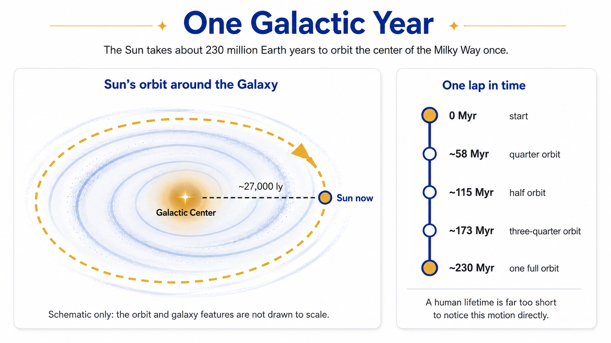
Fig. 3.6 This course-created schematic shows the idea of a Galactic year: one orbit of the Sun around the center of the Milky Way takes about \(230\) million Earth years. The figure is not drawn to scale; its purpose is to connect Galactic motion with a timescale students can compare to Earth history. Image credit: Instructor-created course media.#
A timescale of \(230\) million years is difficult to imagine. The Sun has completed only a small number of Galactic orbits during Earth’s entire history, and a human lifetime is far too short to notice this motion directly. This is why astronomy often requires models and long-term inference. We cannot watch the Sun complete a Galactic orbit, but we can measure motions, distances, and gravitational structure well enough to understand that the orbit is happening.
The images below compare three galaxy-scale views. The first is a model-based outside view of the Milky Way, which we cannot photograph directly because we live inside it. The second shows Andromeda, the nearest major spiral galaxy, which gives us a useful comparison object. The third shows the Local Group, the neighborhood of galaxies that includes the Milky Way and Andromeda.
Fig. 3.7 This artist concept shows the Milky Way as a barred spiral galaxy. Since we live inside the Milky Way, astronomers combine many observations into a model-based picture of its large-scale structure. Image credit: NASA/JPL-Caltech, NASA media.#

Fig. 3.8 Andromeda is the nearest major spiral galaxy to the Milky Way. Studying Andromeda helps astronomers understand what large spiral galaxies are like from the outside, a view we cannot get for our own Galaxy. Image credit: NASA, ESA, J. Dalcanton, B. F. Williams, L. C. Johnson, the PHAT team, and R. Gendler via ESA/Hubble, NASA/ESA Hubble media.#
Fig. 3.9 The Local Group contains the Milky Way, Andromeda, Triangulum, and many smaller galaxies. This map shifts attention from individual stars to galaxies as members of a larger gravitational neighborhood. Image credit: Richard Powell via Wikimedia Commons, CC BY-SA 2.5.#
The Local Group contains dozens of galaxies, with the Milky Way and Andromeda as its two largest members. Larger collections of galaxies are called galaxy clusters, and clusters and groups can be part of even larger supercluster-scale patterns. Our Local Group lies within Laniakea (lah-nee-ah-KAY-ah), a much larger cosmic structure whose name is often translated as “immense heaven” or “open skies.”
Checkpoint
Why is a galaxy more than just a large collection of stars?
This scale matters for the search for life because every step outward changes our tools. In the Solar System, we can sometimes send spacecraft. Around nearby stars, we usually infer planets from light and motion. Across galaxies, we mostly study populations, structure, chemistry, and cosmic history. The question “Where could life exist?” depends on knowing which scale we are talking about.
3.2.3. The scale of the Solar System#
The Solar System is much larger than most pictures make it seem. Textbook diagrams usually have to make a choice: they can show the planets large enough to recognize, or they can show the distances between them accurately. They usually cannot do both on the same page. If the distances are shown honestly, the planets become too small to see. If the planets are shown clearly, the distances must be compressed.
That distortion is not a minor detail. It can quietly change how we imagine space. The Solar System is not a crowded set of planets sitting close together. It is mostly empty space, with small worlds separated by enormous distances. This matters for exploration because distance controls travel time, communication time, spacecraft design, and what kind of search is realistic.
The figure below shows why Solar System scale is hard to draw honestly: the planets become tiny, while the distances between them become enormous.
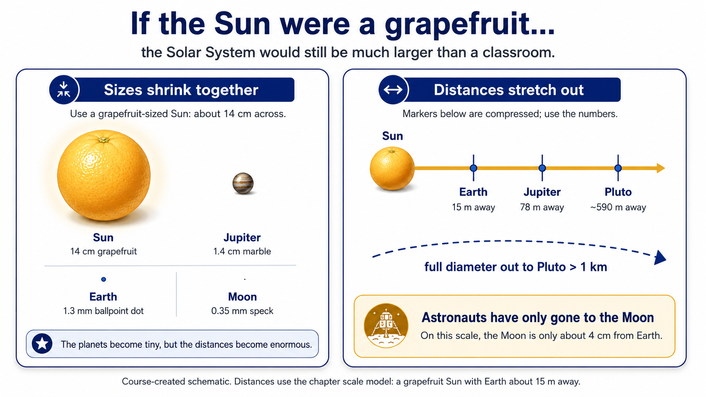
Fig. 3.10 This course-created schematic uses the chapter’s grapefruit-Sun model. It shows why a true scale model of the Solar System quickly becomes too large for a classroom or textbook page. Image credit: Instructor-created course media.#
Suppose the Sun were reduced to about the size of a grapefruit. On that scale, Jupiter would be about the size of a marble, and Earth would be about the size of the ballpoint in a pen. Earth would not sit just beside the Sun. It would be about \(15\ {\rm m}\) away. The Moon would be only a few centimeters from Earth, which is a good reminder that human space travel has barely left Earth’s immediate neighborhood.
This video shows a real outdoor scale model of the Solar System, where both planet sizes and distances are represented consistently. Focus on how much physical space is needed once the distances are no longer compressed.
The outer Solar System stretches the model even farther. Pluto’s average distance from the Sun is about \(39\) times Earth’s distance from the Sun. So, if Earth is \(15\ {\rm m}\) from the grapefruit Sun, Pluto would be roughly \(39 \times 15\ {\rm m}\) from it. The full width of the Solar System out to Pluto’s orbit would be more than \(1\ {\rm km}\) across.
Try the numbers
Using the grapefruit model, let Earth be \(15\ {\rm m}\) from the Sun. Pluto is about \(39.5\) times farther from the Sun than Earth is, so its scaled distance is
That is the distance from the grapefruit Sun to Pluto. A full diameter across Pluto’s orbit is twice that distance:
So, even with a grapefruit-sized Sun, the Solar System out to Pluto would be more than \(1\ {\rm km}\) across.
# Use the chapter's scale model: Earth is 15 meters from the grapefruit-sized Sun.
earth_distance_scaled_m = 15
# Pluto's average distance is about 39.5 times Earth's distance from the Sun.
pluto_distance_au = 39.5
# Calculate Pluto's scaled distance from the Sun.
pluto_distance_scaled_m = pluto_distance_au * earth_distance_scaled_m
# Calculate the full diameter across Pluto's average orbit.
pluto_orbit_diameter_scaled_m = 2 * pluto_distance_scaled_m
print(f"In the grapefruit model, Pluto would be about {pluto_distance_scaled_m:.0f} meters from the Sun.")
print(f"The full width across Pluto's orbit would be about {pluto_orbit_diameter_scaled_m:,.0f} meters, or more than 1 kilometer.")
In the grapefruit model, Pluto would be about 592 meters from the Sun.
The full width across Pluto's orbit would be about 1,185 meters, or more than 1 kilometer.
Checkpoint
Why can a Solar System diagram show sizes accurately or distances accurately, but usually not both?
For the search for life, this scale has a practical meaning. Mars, Europa, Enceladus, Titan, and other Solar System targets are nearby in astronomical terms, but they are still difficult places to reach. The Solar System is our own backyard, but it is a very large backyard.
3.2.4. Light-years and looking into the past#
Distances inside the Solar System are large, but we can still describe many of them using astronomical units. An astronomical unit, or AU, is roughly Earth’s average distance from the Sun. That unit works well for planets, asteroids, and comets, but it quickly becomes awkward when we talk about stars. The closest star system, Alpha Centauri, is about \(265{,}000\ {\rm AU}\) away. That is a one-way distance. Even the nearest stars are far beyond the scale of ordinary Solar System travel.
For interstellar distances, astronomers usually use the light-year. A light-year is the distance light travels through space in one year. It is a unit of distance, not a unit of time. Alpha Centauri is about \(4.25\ {\rm ly}\) away, which means its light takes about \(4.25\) years to reach us. If you look at Alpha Centauri tonight, you do not see it as it is at this exact moment. You see it as it was a little more than four years ago.
This video gives a broad introduction to astronomical distance measurement. For this subsection, focus on why ordinary units become inconvenient in astronomy and why distance also affects how old the information is when it reaches us.
The reason is simple but important: light has a very high speed, but it does not travel instantly. Light travels about \(9.46\) trillion kilometers in one year. That distance is one light-year. The number is so large that writing stellar distances in kilometers quickly becomes less helpful than using a unit based on light travel.
Try the numbers
A useful approximation is that \(1\ {\rm ly} \approx 62{,}000\ {\rm AU}\). Alpha Centauri is about \(4.25\ {\rm ly}\) away, so its distance in AU is approximately
This is close to the more detailed value of about \(265{,}000\ {\rm AU}\). The exact number depends on the precise distance used, but the main lesson is unchanged: even the nearest star system is hundreds of thousands of astronomical units away.
# Use a simple approximation for the number of astronomical units in one light-year.
au_per_light_year = 62_000
# Alpha Centauri is about 4.25 light-years away.
alpha_centauri_distance_ly = 4.25
# Convert the distance from light-years to astronomical units.
alpha_centauri_distance_au = alpha_centauri_distance_ly * au_per_light_year
print(f"Using 1 light-year = {au_per_light_year:,} AU, Alpha Centauri is about {alpha_centauri_distance_au:,.0f} AU away.")
Using 1 light-year = 62,000 AU, Alpha Centauri is about 263,500 AU away.
The same idea applies across larger distances. The Milky Way is about \(100{,}000\ {\rm ly}\) in diameter, so light takes about \(100{,}000\) years to travel across the Galaxy. The Sun is about \(27{,}000\ {\rm ly}\) from the center of the Milky Way, so light from the Galactic center takes tens of thousands of years to reach our region of the Galaxy. When we look across the Milky Way, we are not seeing every part of the Galaxy at the same moment in time.
This can feel strange, but we use a similar idea in everyday language. If someone asks how far Dallas is from Commerce, a person might answer “about an hour.” That is not really a distance. It is a travel time that assumes a typical speed. In astronomy, light gives us the travel speed. When we say the Orion Nebula is about \(1{,}350\ {\rm ly}\) away, we are saying that its light has been traveling for about \(1{,}350\) years before reaching us.
The tab set below gives three examples of distance as lookback time, moving from the nearest star system to a star-forming region inside the Milky Way and then to a neighboring galaxy.

Fig. 3.11 Alpha Centauri is the nearest star system to the Sun, about \(4.25\ {\rm ly}\) away. Its light takes a little more than four years to reach us, so even our nearest stellar neighbor is seen with a delay. The inset also reminds us that different kinds of light can reveal different information about the same object. Image credit: NASA, NASA media.#

Fig. 3.12 The Orion Nebula is about \(1{,}350\ {\rm ly}\) away. When we observe it, we see a nearby star-forming region as it was roughly \(1{,}350\) years ago. Image credit: NASA, ESA, M. Robberto, and the Hubble Space Telescope Orion Treasury Project Team via ESA/Hubble, NASA/ESA Hubble media.#

Fig. 3.13 The Andromeda Galaxy is about \(2.5\) million light-years away. Its light left long before modern humans built cities, wrote books, or developed telescopes, so observing Andromeda is also observing deep time. Image credit: NASA, ESA, B. Williams, Z. Levay, and the PHAT/PHAST teams via ESA/Hubble, NASA/ESA Hubble media.#
Checkpoint
Why does looking farther away usually mean looking farther into the past?
For astrobiology, light travel time is a reminder that distant evidence is delayed evidence. If we someday detect a possible biosignature in the atmosphere of a planet around another star, we will be learning about that world as it was when the light left, not necessarily as it is right now.
3.2.5. Counting stars and thinking about searches#
The Milky Way contains roughly \(100\) billion stars. That number is easy to say but hard to imagine. A useful way to make it more concrete is to turn it into an activity: suppose you could count one star every second. How long would it take to count all the stars in the Milky Way?

Fig. 3.14 This Hubble image of the globular cluster NGC 6397 shows a dense field of stars, but even this is only a small piece of the larger Milky Way. The image helps turn “counting stars” into a scale problem: a galaxy contains so many stars that an individual-by-individual search would be painfully slow. Image credit: NASA, ESA, T. Brown, S. Casertano, and J. Anderson via ESA/Hubble, NASA/ESA Hubble media.#
Listening cue
In class, Counting Stars by OneRepublic is a useful mnemonic for this idea: counting stars sounds simple until you realize how many stars a galaxy contains. You can listen to the short audio sample on the Wikipedia file page. The song is not evidence for anything scientific; it is just a memory hook for the scale problem.
The arithmetic is simple. If the Milky Way contains about \(100\) billion stars, then counting one star each second would require \(100\) billion seconds. To convert seconds into years, divide by the number of seconds in one year.
Try the numbers
A rough estimate treats the Milky Way as having \(100\) billion stars. If you count one star each second, the time in seconds equals the number of stars.
Even an impossibly steady count would take more than \(3{,}000\) years.
# Estimate the number of stars in the Milky Way.
number_of_stars = 100_000_000_000
# Count one star every second.
counting_rate_stars_per_second = 1
# Convert seconds to years using the average length of a year.
seconds_per_year = 365.25 * 24 * 60 * 60
# Calculate the total counting time.
time_seconds = number_of_stars / counting_rate_stars_per_second
time_years = time_seconds / seconds_per_year
print(f"Counting {number_of_stars:,} stars at one star per second would take about {time_years:,.0f} years.")
Counting 100,000,000,000 stars at one star per second would take about 3,169 years.
This estimate explains why the search for life cannot simply mean “look everywhere.” A systematic search for life in the Galaxy would be like trying to point a telescope at each star and ask whether any planet there might be inhabited. The number of possible targets is encouraging, but it is also overwhelming.
Scientists therefore need search strategies. They ask which stars are nearby enough to study well, which stars are stable enough to host long-lived planets, which stars have planets, and which planets might have surfaces, atmospheres, water, or useful chemistry. The search is not only about hope; it is about prioritizing limited observing time and limited spacecraft resources.
Checkpoint
Why does the size of the Milky Way force scientists to choose search priorities?
Good scientific searches use scale to make strategy possible. The large number of stars gives us many possible places to investigate, but it also means that searching wisely is just as important as searching hopefully.
3.2.6. Dark matter and dark energy#
The word dark can be misleading. In everyday language, dark usually means something is black or dim. In astronomy, dark often means something different: we infer that something is there because of its effects, even though it does not shine in a way we can directly see.
Dark matter is matter that appears to have gravity but does not emit, absorb, or reflect light in the ordinary way. Astronomers infer dark matter from the motions of stars and galaxies, the behavior of galaxy clusters, and the bending of light by gravity. The key point is not that scientists looked into space and saw a black substance. The key point is that visible matter alone does not explain the gravitational behavior we observe.
Dark energy is different. It is not another kind of hidden matter inside galaxies. It is the name scientists give to whatever is causing the expansion of the universe to accelerate. Observations of distant galaxies and exploding stars show that the expansion of the universe has not simply been slowing down under gravity. Instead, the expansion appears to be speeding up.
This video separates dark matter from dark energy, which is the main goal of this subsection. Focus on the evidence style: scientists infer both ideas from measurable effects, but dark matter is tied to extra gravitational mass while dark energy is tied to accelerated cosmic expansion.
The examples below show the same scientific habit in two different contexts: scientists infer unseen causes from measurable effects.

Fig. 3.15 The Bullet Cluster is a pair of colliding galaxy clusters. The pink regions show hot normal matter seen in X-rays, while the blue regions show where most of the mass is inferred from gravitational lensing. The separation between pink and blue is one reason this system is often used as evidence for dark matter. Image credit: NASA/CXC/CfA/M. Markevitch et al.; NASA/STScI; Magellan/U. Arizona/D. Clowe et al.; ESO WFI via Chandra, NASA/Chandra media.#
NASA Goddard Scientific Visualization Studio
This animation illustrates accelerating cosmic expansion. Focus on the evidence idea: dark energy is not shown as a visible substance, but is the name scientists give to the unknown cause of the observed speeding-up of the universe’s expansion. Video credit: NASA Goddard Space Flight Center Conceptual Image Lab, NASA media.
Dark matter and dark energy are not the same thing. Dark matter helps explain why galaxies and galaxy clusters have more gravitational mass than visible matter alone can provide. Dark energy helps explain why the expansion of the universe is accelerating. Both are major open questions in astronomy, but they are scientific ideas because they are tied to observations that can be measured, tested, and compared with competing models.
Checkpoint
What makes dark matter and dark energy scientific ideas rather than simple guesses?
For the search for life, dark matter and dark energy are not usually the main actors. They do not tell us whether a moon has an ocean or whether an exoplanet has oxygen. They matter here because they show how astronomy often works: scientists use visible evidence to infer hidden causes. That same style of reasoning will return when we study exoplanets, atmospheres, and possible biosignatures.
3.2.7. The expanding universe and the Big Bang#
One of the most important discoveries of modern astronomy is that the universe is expanding. When astronomers observe distant galaxies, they usually find that those galaxies are moving away from us. Even more importantly, galaxies that are farther away tend to recede faster. This pattern tells us that the universe is not static. The distances between widely separated galaxies are increasing over time.
That does not mean Earth is at the center of an explosion. A person in almost any distant galaxy would also see other distant galaxies moving away. The expansion is a property of space itself. On large enough scales, the space between galaxies grows, so the galaxies become farther apart even though there is no single center that everything is fleeing from.

Fig. 3.16 This NASA illustration addresses two linked ideas: space can expand between galaxies, and light traveling through expanding space can be stretched to longer wavelengths. Use it to avoid the common misconception that the Big Bang was an ordinary explosion from one central point into empty space. Image credit: NASA, ESA, Leah Hustak (STScI), NASA media.#
If the universe is expanding now, then the observable universe must have been denser and hotter in the past. Running the expansion backward does not simply mean rewinding galaxies through space like movie objects flying back to a central point. It means that the space between distant regions was smaller, the average density was higher, and the early universe was much hotter. The Big Bang model describes this early hot, dense state and the expansion that followed.
The Big Bang happened about \(13.8\) billion years ago. The phrase can be misleading because it sounds like an explosion inside space. A better way to think about it is that the observable universe expanded from an earlier state that was much hotter, denser, and more compact than it is today. Science can describe much of the history after that early stage, but the very earliest moments still involve open questions.
This animation uses an expanding balloon as a two-dimensional analogy for expanding space. Focus on the main idea, not the literal balloon: as the surface expands, every marked point sees the other points moving away, and more distant points separate faster. Video credit: Martin Kornmesser, Luis Calçada, NASA, and ESA/Hubble, ESA/Hubble media.
A common classroom analogy is raisin bread. Imagine raisins evenly spaced inside dough. Before baking, two nearby raisins might be \(1\ {\rm cm}\) apart, while two more distant raisins might be \(3\ {\rm cm}\) apart. As the bread expands, both separations grow. From the point of view of any one raisin, the other raisins appear to move away. The more distant raisins appear to move away faster because there is more expanding dough between them.
The analogy is useful, but it has limits. Raisin bread expands into the space of your kitchen, while the universe is not expanding into a larger kitchen-like space that we can stand outside of and observe. The analogy is meant to help with one idea: when the space between objects expands, every observer can see distant objects moving away without needing to be at the center.
There are several major lines of evidence for the Big Bang model. The expansion of galaxies tells us that the universe has changed over time. The cosmic microwave background is leftover radiation from an early hot stage of the universe. The observed abundance of the lightest elements, especially hydrogen and helium, also agrees with models of the early universe.

Fig. 3.17 This Planck map shows tiny temperature differences in the cosmic microwave background, the oldest light we can observe directly. It is not a map of stars or galaxies; it is evidence from the early universe, long before stars and planets existed. Image credit: ESA and the Planck Collaboration via NASA SVS, NASA/ESA media.#
The early universe was chemically simple compared with the universe today. Models of the early universe predict that it should have produced mostly hydrogen and helium, with only small amounts of other light elements. Observations agree with this broad picture: the universe began with simple ingredients, not with rocky planets, oceans, atmospheres, or life already in place.
Checkpoint
Why is the Big Bang better understood as expansion of space rather than an explosion from one place?
This leaves an important astrobiology question. If the early universe was mostly hydrogen and helium, where did the carbon, oxygen, nitrogen, silicon, iron, and other ingredients of rocky planets and living organisms come from? The answer takes us from cosmology to stars.
3.2.8. From hydrogen and helium to “star stuff”#
The early universe was chemically simple. It contained mostly hydrogen and helium, with only small amounts of other light elements. That means the universe did not begin with rocky planets, oceans, atmospheres, or living organisms already available. The ingredients for those things had to be made later.
Stars are the main engines of that chemical transformation. A star forms when gravity pulls gas inward until the central temperature and pressure become high enough for nuclear fusion. In the Sun, the main fusion process converts hydrogen into helium. Fusion releases energy, and some of that energy eventually leaves the star as the light and heat that can warm planets.
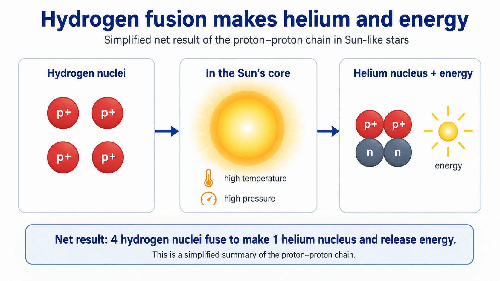
Fig. 3.18 This simplified schematic shows the main idea of hydrogen fusion in a Sun-like star: hydrogen nuclei combine to make helium and release energy. The real proton-proton chain has intermediate steps, including positrons, neutrinos, and gamma rays, but the net result is that hydrogen is converted into helium while energy is released. Image credit: Instructor-created course media.#
Massive stars can continue building heavier elements through later stages of fusion. Carbon, oxygen, silicon, and iron are made inside stars. Fusion up to iron can release energy, but building elements heavier than iron usually requires more extreme environments, such as supernova explosions or neutron-star mergers. The details are complicated, but the basic story is clear: the universe became chemically richer through the lives and deaths of stars.
Sagan’s phrase is memorable because it is chemically literal: many atoms in bodies and planets were made by earlier stars. Source/context: NASA.
This short NASA video explains the “star stuff” idea in modern scientific language. Focus on the distinction between analogy and physical origin: the elements in our bodies were part of earlier stars before the Sun, Earth, and Solar System formed.
The visual evidence for this idea comes from astronomy. Telescopes can detect different elements in stars, nebulae, and supernova remnants. A supernova remnant is the expanding debris left after a massive star explodes. These remnants are not just beautiful clouds; they are part of the recycling process that returns newly made elements to space.

Fig. 3.19 This Chandra graphic connects the periodic table to cosmic origins. The important point is not that every atom has one simple source, but that the elements in planets and bodies are products of cosmic history rather than ingredients unique to Earth. Image credit: NASA/CXC/K. Divona via Chandra, NASA/Chandra media.#

Fig. 3.20 Cassiopeia A is a supernova remnant, the debris field left after a massive star exploded. Chandra observations map different elements in this debris, showing how stellar explosions spread chemically useful material into space. Image credit: NASA/CXC/SAO via Chandra, NASA/Chandra media.#
The phrase “we are star stuff” therefore has a physical meaning. The hydrogen in your body is ancient and traces back to the early universe. Much of the carbon and oxygen in your body was made inside stars. Other elements were produced or dispersed through violent stellar events. Long before Earth formed, earlier generations of stars had already enriched space with the ingredients that would later become planets and living organisms.
For astrobiology, this is encouraging. If stars commonly make and distribute the elements needed for chemistry, then Earth is not the only place where the raw materials for life can exist. Similar heavy elements occur throughout the Solar System and in many other star systems. That makes Earthlike planets and complex chemistry plausible elsewhere.
Checkpoint
Why does “we are star stuff” refer to chemistry, not poetry alone?
Still, raw materials are not the same as life. A planet can have carbon, oxygen, water, and energy without being inhabited. The scientific search for life asks what happens after the ingredients exist: whether they collect in the right environments, whether chemistry becomes biological, and what evidence would let us tell the difference.
3.2.9. How big is the universe we can see?#
The universe is enormous, but there is a limit to what we can observe. That limit is not mainly caused by weak telescopes. Better telescopes help us see fainter objects and collect more detailed information, but they do not remove the basic limit set by the speed of light.
Light takes time to travel. When we look at the Andromeda Galaxy, about \(2.5\) million light-years away, we see it as it was about \(2.5\) million years ago. When astronomers look at much more distant galaxies, they see them as they were billions of years ago. Looking far away is also looking back in time.
The universe is about \(13.8\) billion years old. That means there are regions whose light has not had enough time to reach us. Those regions may exist, but they are not part of our observable universe. The observable universe is the region of space from which light, or any other signal, has had time to reach us.

Fig. 3.21 Webb’s First Deep Field shows thousands of galaxies in a tiny patch of sky. The image does not show the whole observable universe; it gives a small “core sample” that helps reveal how many galaxies can appear when a powerful telescope looks deeply into space. Image credit: NASA, ESA, CSA, and STScI via ESA/Webb, NASA/ESA/CSA Webb media.#
There is one important subtlety. Since the universe has been expanding while light has been traveling, the observable universe is not simply \(13.8\) billion light-years in radius. The farthest matter we can observe today is now much farther away than it was when its light began traveling toward us. A commonly rounded value for the radius of the observable universe is about \(46\) billion light-years, giving a diameter of about \(93\) billion light-years.
Common misconception
The observable universe is not the same thing as the whole universe. It is the part of the universe that can affect our observations because light or other signals have had enough time to reach us.
NASA Scientific Visualization Studio
This short NASA visualization places real Hubble galaxies into a three-dimensional model based on approximate distances. Focus on the main idea: deep-field images are not just pictures across space; they also organize galaxies across time because more distant light began its journey earlier. Video credit: NASA/STScI via NASA SVS, NASA media.
The observable boundary changes with time, but not in a way that matters much for a human lifetime. If we wait, new light can reach us from slightly farther away. But major changes require cosmic timescales. A human life is far too short to notice the observable universe growing in any practical way.
Checkpoint
Why does a better telescope not let us see beyond the observable universe?
For astrobiology, this limit matters because science depends on available evidence. We can ask whether life could exist across the universe, but we can only test ideas using information that can reach us. The observable universe is already vast enough to contain an enormous number of galaxies, stars, and planets. The challenge is not that there are too few places to search; the challenge is deciding what evidence we can actually obtain.
3.3. A universe of matter and energy#
3.3.1. Atoms: the building blocks of matter#
The previous section explained how stars made the elements that later became planets and living organisms. Now we need to zoom in. What are those elements actually made of? To answer that, we move from galaxies and stars to atoms.
Ancient thinkers often described matter using a small set of basic substances, such as earth, water, air, and fire. That idea was useful historically, but modern science gives us a different picture. Today, we identify more than one hundred chemical elements. Each element is a type of atom, and atoms are the basic building blocks of ordinary matter.
An atom is made from three main subatomic particles: protons, neutrons, and electrons. Protons have positive electric charge, electrons have negative electric charge, and neutrons have no electric charge. Protons and neutrons are packed into the atom’s nucleus, while electrons occupy the surrounding region. A drawing of an atom is always simplified because the nucleus is tiny compared with the space occupied by the electrons.
Hydrogen and helium are the simplest examples. A hydrogen atom has one proton and one electron. Helium has two protons, usually two neutrons, and two electrons. These two elements were also the main ingredients of the early universe, which is why they appear so often in astronomy.
For a neutral atom, the number of protons equals the number of electrons. The positive charge from the protons and the negative charge from the electrons balance. If an atom gains or loses electrons, it becomes an ion. Ions matter because charged atoms behave differently in chemical reactions, in planetary atmospheres, and in space environments shaped by radiation and magnetic fields.
This video introduces the nucleus and the basic particles that make up atoms. For this chapter, focus on the main structure: protons and neutrons are in the nucleus, electrons surround the nucleus, and atoms can become ions if they gain or lose electrons.
Checkpoint
What changes when a neutral atom becomes an ion?
Atoms matter for the search for life because life is chemistry organized in a special way. A planet can have the right elements only if those elements exist in the first place. Hydrogen, carbon, nitrogen, oxygen, phosphorus, sulfur, and many other elements can combine into molecules, minerals, atmospheres, oceans, and eventually living systems. Understanding atoms is the first step toward understanding the chemistry that makes planets and life possible.
3.3.2. Atomic number, mass number, and isotopes#
Once we know that atoms contain protons, neutrons, and electrons, we can describe atoms more precisely. The two most important numbers are the atomic number and the mass number. These numbers tell us what element an atom is and which version of that element we are looking at.
The atomic number, or proton number, is written as \(Z\). It is the number of protons in the nucleus, and it identifies the element. Every hydrogen atom has one proton, so hydrogen has \(Z=1\). Every helium atom has two protons, so helium has \(Z=2\). Every carbon atom has six protons, so carbon has \(Z=6\). If the number of protons changes, the element changes.
The mass number is written as \(A\). It is the total number of protons and neutrons in the nucleus. Electrons are important for chemistry, but they contribute very little to the atom’s total mass. For this reason, the mass number focuses on the particles in the nucleus.
A compact way to write this information is to place the mass number above the atomic number to the left of the chemical symbol:
In this notation, \({\rm X}\) is the chemical symbol written in roman font, \(Z\) is the atomic number, and \(A\) is the mass number. For example, carbon always has \(Z=6\) because every carbon atom has six protons.
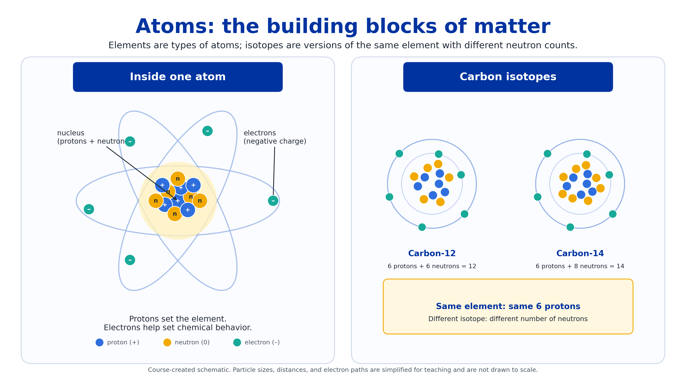
Fig. 3.22 This course-created schematic shows how protons, neutrons, and electrons fit into atoms and how isotopes differ. The carbon examples show the main rule: protons define the element, while different numbers of neutrons create different isotopes of that element. Image credit: Instructor-created course media.#
Isotopes are versions of the same element with different numbers of neutrons. Carbon-12 and carbon-14 are both carbon because both have six protons. In isotope notation, carbon-12 is written as \({}^{12}_{6}{\rm C}\), while carbon-14 is written as \({}^{14}_{6}{\rm C}\).
The isotope name tells you the element and the mass number. Carbon-14 does not mean carbon has fourteen protons. It means this carbon atom has a total of fourteen protons plus neutrons. Since carbon always has six protons, the remaining eight particles in the nucleus must be neutrons.
Reading isotope notation
In isotope notation, the lower-left number is \(Z\), the atomic number. The upper-left number is \(A\), the mass number. The chemical symbol tells you the element.
Some isotopes are stable, while others are radioactive. A radioactive isotope changes over time as its nucleus decays into a different form. Carbon-14 is radioactive, which is why it can be used to estimate the ages of once-living material. That dating method is not the main point here, but it shows that isotopes are not just vocabulary. They can preserve information about time, chemistry, and physical processes.
Checkpoint
Why are \({}^{12}_{6}{\rm C}\) and \({}^{14}_{6}{\rm C}\) both carbon?
Isotopes matter in astrobiology because they can act like chemical fingerprints. Scientists use isotope patterns to study meteorites, planetary atmospheres, ancient rocks, water histories, and biological materials. The basic idea is simple: atoms of the same element can come in different versions, and those versions can carry clues about where matter has been and what has happened to it.
3.3.3. Molecules, compounds, and organic chemistry#
Atoms can join together to form molecules. A molecule consists of two or more atoms bonded together. The atoms may be the same element, as in molecular oxygen, \({\rm O}_2\), or different elements, as in water, \({\rm H}_2{\rm O}\). Molecules matter because the properties of a substance depend not only on which atoms are present, but also on how those atoms are combined.
A compound is a molecule made from two or more different elements. This means all compounds are molecules, but not all molecules are compounds. For example, \({\rm O}_2\) is a molecule but not a compound because it contains only oxygen atoms. Water, \({\rm H}_2{\rm O}\), is both a molecule and a compound because it contains hydrogen and oxygen.
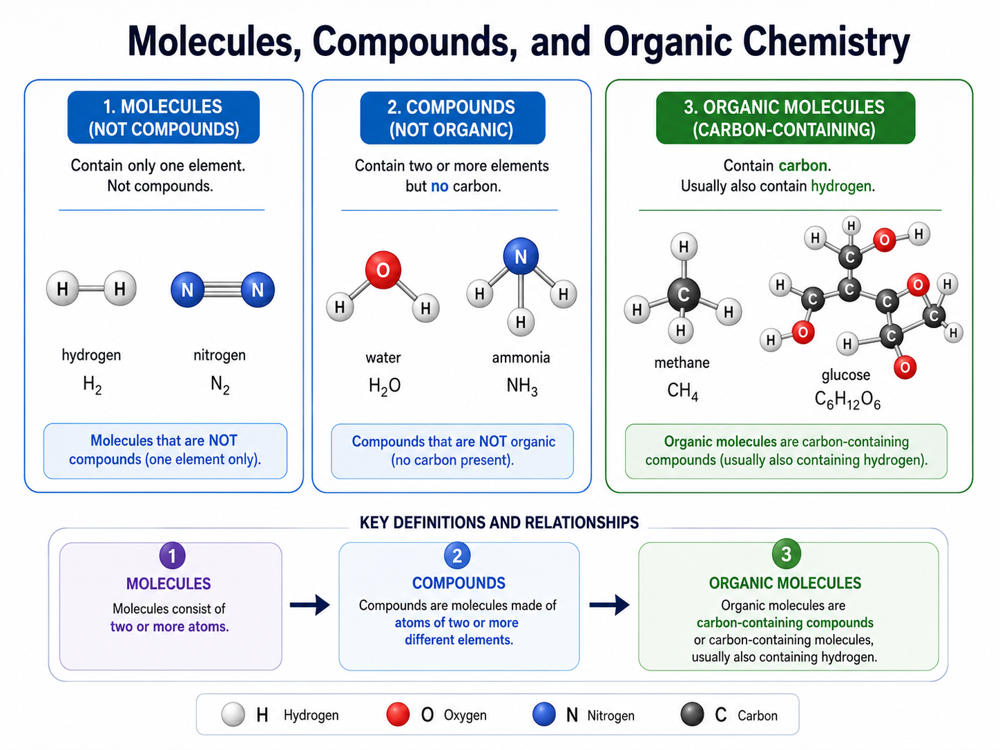
Fig. 3.23 This course-created schematic separates three related ideas. Molecules contain two or more atoms, compounds contain atoms of two or more different elements, and organic molecules contain carbon and usually hydrogen. Image credit: Instructor-created course media.#
Chemical properties can differ strongly between atoms and molecules. Atomic oxygen, \({\rm O}\), behaves differently from molecular oxygen, \({\rm O}_2\). Molecular oxygen is the gas many organisms use in respiration. Ozone, \({\rm O}_3\), contains only oxygen too, but it has different chemical and atmospheric behavior. This is why chemical formulas matter: changing the number or arrangement of atoms can change the substance.
Compounds containing carbon are often called organic molecules. The term organic can be confusing because it does not always mean “produced by life.” Methane, \({\rm CH}_4\), and glucose, \({\rm C}_6{\rm H}_{12}{\rm O}_6\), are organic molecules because they contain carbon, but organic molecules can also be made by nonliving chemical processes. Carbon is especially useful because it can form stable chains, rings, and complex backbones. That flexibility makes carbon central to Earth life and to the search for prebiotic chemistry elsewhere.
Organic molecules have been found in meteorites, interstellar clouds, protoplanetary disks, and planetary atmospheres. Their presence is scientifically exciting, but it is not proof of life. Organic chemistry can be a step toward life, a product of life, or a non-biological process. Context and additional evidence are essential.
Checkpoint
Why does finding an organic molecule not automatically mean finding life?
This distinction will matter repeatedly. A habitable environment needs useful chemistry, but habitability is not the same as being inhabited. Evidence for life must be stronger than evidence for ingredients.
3.3.4. Phases of matter and planetary environments#
A substance can behave differently in different phases. Water can be solid ice, liquid water, or water vapor, but it is still made of \({\rm H}_2{\rm O}\) molecules in each case. The difference is not the identity of the molecule. The difference is how the molecules move and how strongly they interact with one another.
In a solid, molecules are held in place more tightly. In a liquid, molecules remain close together but can move past one another. In a gas, molecules are much farther apart and move freely. Temperature matters because it measures the average motion of particles in a substance. Higher temperature usually means faster molecular motion.
Pressure matters too. A phase change happens when conditions allow molecules to rearrange or break free from their current phase. Melting changes a solid into a liquid. Freezing changes a liquid into a solid. Evaporation changes a liquid into a gas, while sublimation changes a solid directly into a gas. This distinction matters on low-pressure worlds such as Mars, where ice can sometimes sublime instead of melting into liquid water first.
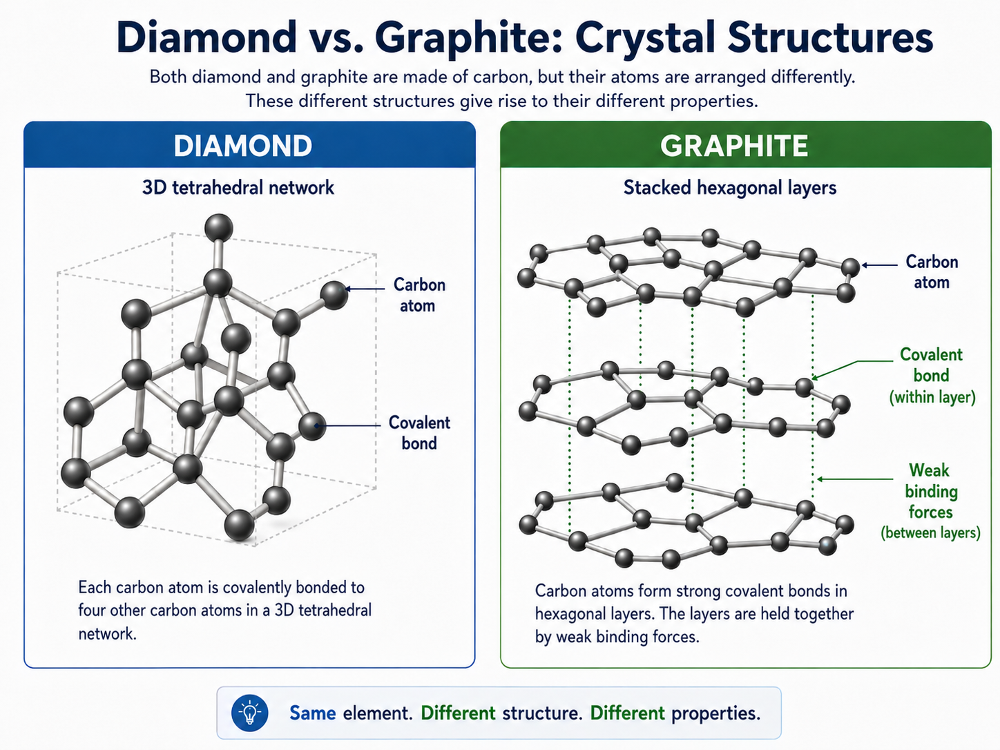
Fig. 3.24 This schematic connects phases to bonding and structure. Solids generally have stronger bonding than liquids or gases, and crystalline solids can have especially ordered structures. Diamond and graphite are both made of carbon, but their different arrangements give them very different properties. Image credit: Instructor-created course media.#
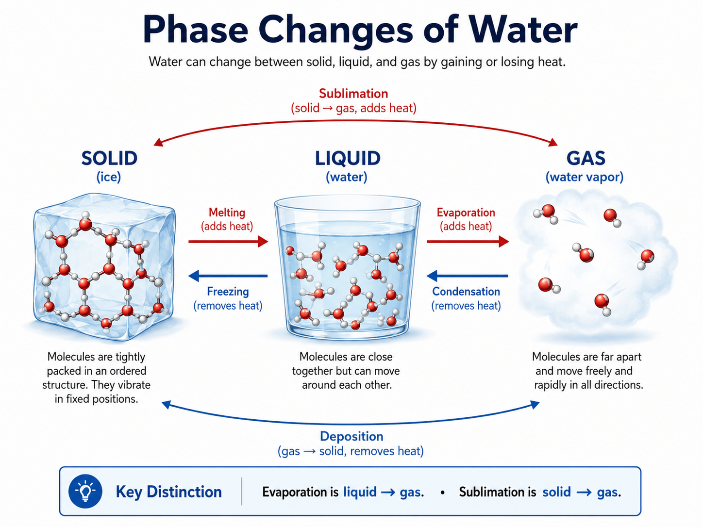
Fig. 3.25 This course-created schematic shows the main phase changes of water. The most important distinction for this chapter is that evaporation changes a liquid into a gas, while sublimation changes a solid directly into a gas. Image credit: Instructor-created course media.#
Earth’s surface pressure allows liquid water to remain stable across a familiar range of temperatures. That is one reason oceans, lakes, rain, clouds, snow, and water vapor can all participate in Earth’s water cycle. Mars is different. Its surface pressure is much lower, so liquid water is much harder to keep stable at the surface. Ice on Mars can sometimes turn directly into vapor through sublimation.
This idea also matters beyond planets with surfaces like Earth’s. On icy moons such as Europa or Enceladus, the surface may be frozen, but liquid water can still exist below the ice if internal heat and pressure allow it. A world does not need a warm Earthlike surface to have liquid water somewhere.
Checkpoint
What is the difference between evaporation and sublimation, and why does that difference matter on worlds like Mars?
For astrobiology, phases of matter are not just vocabulary. They help us decide where useful environments might exist. Liquid water is important for Earthlike life, but whether water is ice, liquid, or vapor depends on the physical conditions of the world we are studying.
3.3.5. Energy and conservation#
Matter gives planets and organisms their physical substance, but energy allows matter to move, change, react, heat up, cool down, and reorganize. In astrobiology, energy matters because life is not just a collection of atoms and molecules. Life is an organized process that must continually use energy to maintain itself.
In physics, energy is the ability to do work or cause change. Work has a specific meaning: it involves a force acting over a distance. When you throw a baseball, your hand pushes the ball while the ball moves. Energy is transferred from your muscles to the ball, and the ball leaves your hand with kinetic energy.
Energy comes in many forms. Kinetic energy is energy of motion, such as falling rocks, orbiting planets, and moving molecules. Radiative energy is energy carried by light, such as sunlight warming the surface of a planet. Potential energy is stored energy, such as gravitational potential energy or chemical potential energy stored in molecular bonds. Thermal energy is the collective kinetic energy of many atoms or molecules, which is why temperature matters for chemical reactions.
Energy vocabulary
Do not treat these energy types as separate substances. They are different ways that energy can be stored, transferred, or observed.
Energy associated with motion.
Examples: moving molecules, falling rocks, orbiting planets.
Energy carried by light.
Examples: sunlight, infrared radiation from warm planets, ultraviolet radiation.
Energy stored by position or arrangement.
Examples: gravitational energy, chemical energy in bonds.
Collective kinetic energy of particles.
Examples: warm atmospheres, hot springs, magma, body temperature.
The most important rule is conservation of energy. Energy can change form and move from one object to another, but the total amount of energy is conserved. This does not mean energy is always useful. Some energy often spreads out as thermal energy, becoming less available to do organized work.
The baseball example shows the idea. Your muscles get energy from chemical reactions in your body. Your hand transfers some of that energy to the baseball. The baseball gains kinetic energy. Some energy also becomes thermal energy in your muscles, joints, the ball, and the surrounding air. Energy has not disappeared, but it has been redistributed.
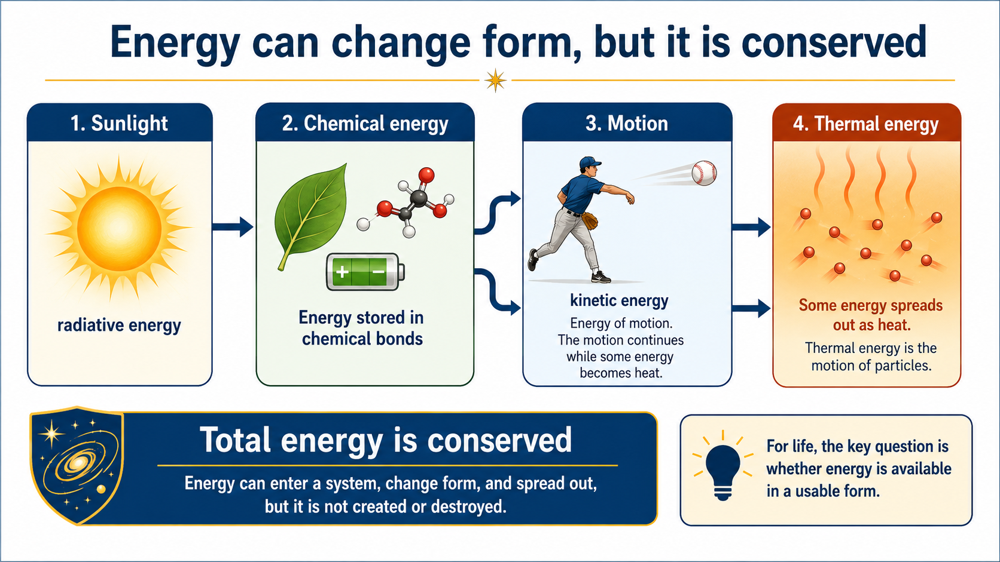
Fig. 3.26 This course-created schematic emphasizes conservation of energy. Energy can enter a system, change form, and spread out, but it is not created from nothing or destroyed. For life, the important question is not only whether energy exists, but whether it is available in a form that organisms or chemistry can use. Image credit: Instructor-created course media.#
For life, chemical potential energy is especially important. Food stores energy in chemical bonds. Cells release and redirect that energy through chemical reactions. On Earth, much of the useful energy in ecosystems ultimately comes from sunlight, either directly through photosynthesis or indirectly through food chains. Some ecosystems also use chemical energy from rocks, water, and volcanic environments rather than relying directly on sunlight.
Energy conservation is therefore central to astrobiology. A habitable environment needs matter, but it also needs usable energy. Liquid water and organic molecules are promising, but without an energy source, chemistry cannot stay active for long.
Checkpoint
Why is it not enough for a planet or moon to have the right ingredients for life?
The search for life is partly a search for energy flow. A world may contain carbon, water, and minerals, but life also needs ways to move energy through chemical systems. That is why astrobiologists pay attention to sunlight, internal heat, volcanic activity, chemical gradients, and reactions between water and rock.
3.3.6. Light as evidence#
Light is one of the most important tools in astronomy because it is often the only information we receive from distant objects. We cannot touch a star, scoop material from a galaxy, or directly sample most exoplanet atmospheres. Instead, astronomers collect light and ask what that light can tell us.
Light is a form of energy. It behaves like a wave, and it also comes in small packets called photons. These two descriptions are both useful. The wave description helps us talk about wavelength, frequency, and color. The photon description helps us talk about how light exchanges energy with atoms, molecules, surfaces, and living systems.
An electromagnetic wave is a linked pattern of electric and magnetic fields that can travel through empty space. This is different from sound, which needs a material medium such as air, water, or rock. Light can cross the vacuum between stars and galaxies, which is why astronomy is possible at all.
Three wave quantities are especially important. Wavelength, usually written \(\lambda\), is the distance from one crest to the next crest, or from one trough to the next trough. Frequency, usually written \(f\), is the number of wave cycles that pass a point each second. Wave speed, written \(v\), is the product of wavelength and frequency. For light in vacuum, the speed is \(c\).
The tab set below introduces the main wave properties of light and shows how visible color is related to wavelength, frequency, and photon energy.
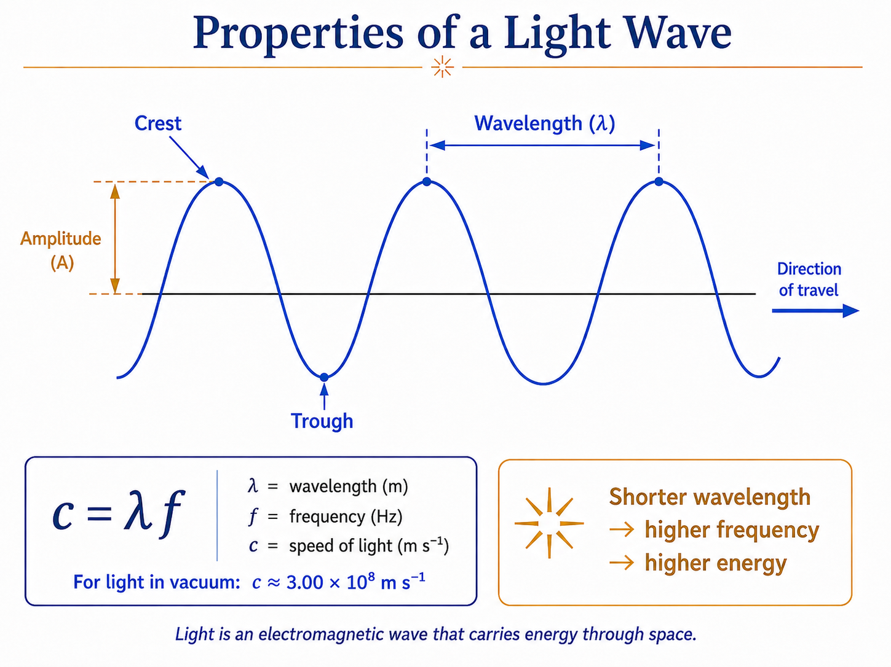
Fig. 3.27 This course-created schematic shows the basic properties of a light wave. The wavelength is measured from crest to crest, the amplitude shows the height of the wave above the midline, and the relation \(c=\lambda f\) connects wave speed, wavelength, and frequency. Image credit: Instructor-created course media.#
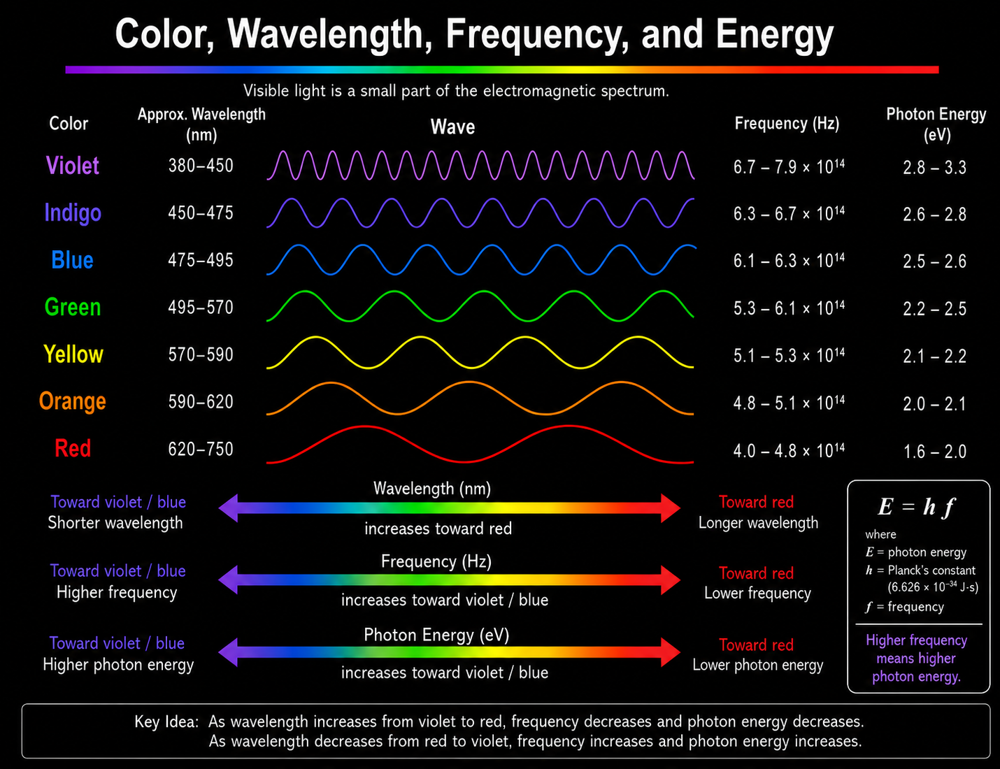
Fig. 3.28 This course-created chart shows how visible color is related to wavelength, frequency, and photon energy. Toward the violet-blue end, wavelengths are shorter, frequencies are higher, and photon energies are higher. Toward the red end, wavelengths are longer, frequencies are lower, and photon energies are lower. Image credit: Instructor-created course media.#
Photons can move electrons, break chemical bonds, heat surfaces, or make molecules vibrate and rotate. This makes light both useful and potentially harmful. Visible light can power photosynthesis. Infrared light can warm a planetary surface. Ultraviolet light can drive chemical reactions but can also damage biological molecules. X-rays and gamma rays can ionize atoms and alter chemistry.
Try the numbers
Green visible light has a wavelength of about \(550\ {\rm nm}\), where \(1\ {\rm nm}=10^{-9}\ {\rm m}\). To estimate its frequency, use \(c=\lambda f\), so \(f=c/\lambda\).
Visible light has extremely high frequency compared with everyday mechanical waves.
# Speed of light in meters per second.
speed_of_light = 3.00e8
# Wavelength of green light in nanometers.
wavelength_nm = 550
# Convert nanometers to meters.
wavelength_m = wavelength_nm * 1e-9
# Calculate frequency using c = wavelength * frequency.
frequency_hz = speed_of_light / wavelength_m
print(f"Green light with a wavelength of {wavelength_nm} nm has a frequency of about {frequency_hz:.2e} Hz.")
Green light with a wavelength of 550 nm has a frequency of about 5.45e+14 Hz.
Checkpoint
Why does shorter-wavelength visible light also have higher frequency and higher photon energy?
Light can therefore carry several kinds of information at once. Its wavelength and frequency tell us about the type of light we are observing, and its photons tell us how much energy that light can carry. The next two subsections build on that idea: first by placing visible light within the full electromagnetic spectrum, and then by showing how spectra reveal composition, temperature, and motion.
3.3.7. The electromagnetic spectrum#
The electromagnetic spectrum is the full range of possible light, from very long radio waves to very short gamma rays. Human eyes detect only a narrow part of this spectrum called visible light. Astronomy uses the whole spectrum because different wavelengths reveal different physical processes.
Radio waves have the longest wavelengths. Microwaves are shorter than radio waves and are useful in studying cold gas and the cosmic microwave background. Infrared light is longer in wavelength than red visible light and often reveals warm dust, cool stars, and planetary atmospheres. Visible light is the small range our eyes detect. Ultraviolet light is shorter than violet visible light and can affect atmospheric and biological chemistry. X-rays and gamma rays have even shorter wavelengths and higher photon energies, often associated with very hot gas, compact objects, or energetic events.
For life, the electromagnetic spectrum is both a resource and a hazard. Starlight can warm planets and power photosynthesis. Infrared light carries heat. Ultraviolet radiation can drive chemistry but also damage molecules. A planet’s atmosphere can block some wavelengths and allow others to reach the surface. That filtering can affect habitability and detectability.

Fig. 3.29 The electromagnetic spectrum extends far beyond visible light. The diagram uses English labels and shows how wavelength, frequency, and everyday examples are connected. Image credit: NASA Science, Introduction to the Electromagnetic Spectrum, NASA media.#
Checkpoint
Why do astronomers use wavelengths that human eyes cannot see?
The more wavelengths we can measure, the more complete our evidence becomes. A planet that looks ordinary in visible light may reveal atmospheric heat in infrared light or high-energy activity in ultraviolet or X-ray observations.
This video reviews light as a tool for astronomy. As you watch, focus on why wavelength matters and why spectroscopy lets astronomers learn composition, temperature, density, motion, and atmospheric conditions without touching the object. The key idea is that light is not just something we see with our eyes; light is data.
3.3.8. Spectroscopy: reading light#
Spectroscopy is the technique of splitting light into its individual wavelengths and studying the resulting spectrum. A prism can separate visible light into a rainbow, but modern astronomy uses diffraction gratings and detectors to measure how bright an object is at each wavelength with much greater precision. This makes light one of astronomy’s most important sources of evidence.
Three basic kinds of spectra matter in this course. A continuous spectrum is smooth across a broad range of wavelengths, like a rainbow without gaps. Hot, dense objects can produce this kind of spectrum. An emission line spectrum shows bright lines at specific wavelengths on a dark background. It is produced when excited atoms or molecules emit light at particular wavelengths. An absorption line spectrum shows dark lines superimposed on a continuous spectrum. It occurs when light passes through gas that absorbs specific wavelengths.
What makes spectroscopy so powerful is that atoms and molecules do not absorb or emit light randomly. Each one interacts with light at characteristic wavelengths, so the resulting pattern of lines acts like a chemical fingerprint. Hydrogen has one pattern, helium has another, and molecules such as water vapor, carbon dioxide, oxygen, methane, and ozone have their own recognizable signatures. This is why spectroscopy is central to studying stars, nebulae, planets, and exoplanet atmospheres.
Hot objects also produce thermal radiation, often called blackbody radiation in the idealized case. Not all wavelengths are equally bright. Hotter objects emit more light overall and peak at shorter, bluer wavelengths, while cooler objects peak at longer, redder or infrared wavelengths. Spectroscopy therefore tells astronomers not only what something is made of, but also something about its temperature.
Spectral lines can also be shifted by motion. Because of the Doppler effect, light from an object moving away from us is shifted toward longer wavelengths, a redshift, while light from an object moving toward us is shifted toward shorter wavelengths, a blueshift. This gives astronomers a way to measure motion in space, even for objects that are far too distant to visit directly.

Fig. 3.30 Continuous, emission, and absorption spectra come from different light-matter interactions. This English-labeled diagram is useful because it shows why spectra can act as chemical fingerprints. Image credit: NASA Webb, STScI illustration by Leah Hustak, NASA/ESA/CSA/STScI media.#

Fig. 3.31 Each element has its own pattern of spectral lines. This diagram compares absorption and emission spectra for sodium, nitrogen, hydrogen, and oxygen, showing that the same wavelengths appear as dark absorption lines or bright emission lines depending on how the light interacts with the gas. Image credit: NASA Webb, STScI illustration by Leah Hustak, NASA/ESA/STScI media.#

Fig. 3.32 This animation shows how motion can shift spectral lines. As a planet and star orbit their shared center of mass, the star moves slightly toward and away from us. That motion shifts the star’s absorption lines, which lets astronomers measure radial velocity even when the planet itself is difficult to see directly. Image credit: Alysa Obertas via Wikimedia Commons, CC BY-SA 4.0.#
{kind=link}
Checkpoint
Why can a pattern of spectral lines tell us about chemical composition?
For astrobiology, spectroscopy is one of the main bridges between life and distant evidence. We cannot scoop up the atmosphere of a distant exoplanet, but we may be able to observe how that atmosphere absorbs or emits light. That does not make interpretation easy, but it gives us a scientific path for looking for possible biosignatures and for distinguishing promising worlds from unpromising ones.
3.4. Our Solar System#
3.4.1. Taking inventory of our backyard#
Before we search for life elsewhere, it makes sense to take inventory of our own backyard. The Solar System is the only planetary system where we can study planets, moons, asteroids, comets, atmospheres, surfaces, interiors, and small bodies up close. It gives us the baseline for asking what other planetary systems might be like.
From inside the Solar System, the planets feel familiar. We can send spacecraft to them, map their surfaces, measure their atmospheres, and compare their histories. From far away, however, even our own Solar System would be difficult to recognize. If someone near Alpha Centauri looked toward us without a powerful telescope, the Sun would dominate the view. The planets would be faint points of reflected light, hidden close to a much brighter star.
That is the basic problem of exoplanet science. A planetary system may contain many worlds, but most of the light comes from the star. To find planets, astronomers often have to look for tiny motions, small dips in starlight, faint infrared dots, or subtle chemical fingerprints in light.
The tab set below compares two perspectives: the Solar System as a local inventory of worlds, and HR 8799 as an example of another planetary system where planets have been directly imaged.

Fig. 3.33 This montage gives a useful inventory of the major planets, but it is not a distance-scale diagram. The inner planets are shown roughly to scale with one another, and the outer planets are shown roughly to scale with one another, but the enormous distances between planets are not represented. Image credit: NASA/JPL, NASA media.#

Fig. 3.34 HR 8799 is a rare example of a planetary system where multiple exoplanets can be directly imaged. The star’s light has been blocked by a coronagraph, allowing four faint giant planets to appear as separate points of infrared light. Image credit: NASA, ESA, CSA, STScI, Laurent Pueyo, William Balmer, and Marshall Perrin, NASA/ESA/CSA/STScI media.#
The comparison should make the search problem clear. When we study our own Solar System, we can inspect many kinds of worlds directly. When we study other planetary systems, we often begin with indirect clues or faint points of light near a bright star. Our local inventory therefore gives us the vocabulary and comparison set we need before interpreting planets around other stars.
Checkpoint
Why is our Solar System useful as a comparison set, even though other planetary systems may be very different?
In the next few subsections, we will use that inventory to look for patterns. The Solar System is not just a list of planets. It has orderly motions, two broad classes of planets, many leftover small bodies, and important exceptions. Those patterns are clues to how the Solar System formed, and they help us think more carefully about where life might be possible.
3.4.2. Major feature 1: patterns of motion#
The first major feature of the Solar System is that its motions are surprisingly orderly. If the planets had formed independently or been captured randomly from different directions, we might expect their orbits to point every which way. Instead, the major planets follow a shared pattern.
All eight major planets orbit the Sun in nearly the same plane. This plane is close to Earth’s orbital plane, which we call the ecliptic. The planets also orbit the Sun in the same direction. If we look down on the Solar System from above Earth’s north pole, the planets move counterclockwise around the Sun.
Most planets also rotate in the same general direction that they orbit. This means that their days and years follow the same broad sense of motion. There are exceptions, especially Venus and Uranus, but the overall pattern is still strong. The orbits are also nearly circular compared with many possible orbital shapes.
The visuals below show the pattern from two angles. The first emphasizes the shared orbital plane. The second shows the inner planets moving around the Sun over time.

Fig. 3.35 This animation shows the ecliptic plane in three dimensions. The important idea is not the exact scale, but the pattern: the inner planets orbit close to a shared plane rather than moving in random directions. Image credit: Lookang via Wikimedia Commons, based on work by Todd K. Timberlake and Francisco Esquembre, CC BY-SA 3.0.#
{kind=link}

Fig. 3.36 This NASA visualization shows the inner Solar System from above the ecliptic plane. Even though the planets have different orbital sizes and periods, their motion is organized around the same central object and nearly the same plane. Image credit: NASA Scientific Visualization Studio, visualizer Tom Bridgman, NASA media.#
This video explains why many objects in space, including planetary systems and disks, become flattened instead of remaining randomly arranged in three dimensions. As you watch, focus on the basic physical idea: collisions reduce random up-and-down motion, while rotation remains. That explanation points ahead to nebular theory, where the Solar System forms from a collapsing, rotating cloud of gas and dust.
This orderly motion is a clue. A nearly flat, same-direction system is not what we would expect from random capture. It suggests that the planets formed from a connected process. Later in the chapter, nebular theory will explain this pattern using a collapsing, rotating cloud of gas and dust.
Checkpoint
Why would same-direction, nearly coplanar orbits suggest a shared origin?
The pattern is strong, but it is not perfect. Venus rotates backward, Uranus is tilted dramatically, and many small moons orbit in unusual directions. Those exceptions are not failures of the pattern. They are clues that the early Solar System was orderly overall, but also violent and messy in detail.
3.4.3. Major feature 2: two broad types of planets#
The second major feature of the Solar System is that the eight major planets fall into two broad groups. The inner planets — Mercury, Venus, Earth, and Mars — are relatively small, rocky worlds close to the Sun. The outer planets — Jupiter, Saturn, Uranus, and Neptune — are much larger worlds farther from the Sun.
The inner planets are often called terrestrial planets because they are Earthlike in the sense that they are made mostly of rock and metal. That does not mean they are all habitable or even similar at the surface. Mercury is airless and heavily cratered. Venus has a thick atmosphere and an extremely hot surface. Earth has oceans and life. Mars is cold, dry, and thinly air-covered today. Still, they belong to the same broad class because they are small, dense, rocky planets with solid surfaces.
The outer planets are often called giant planets or Jovian planets. Jupiter and Saturn are dominated by hydrogen and helium, while Uranus and Neptune contain larger fractions of heavier volatile materials such as water, ammonia, and methane in their interiors. For this chapter, the broad pattern matters more than the detailed subcategories: the outer planets are large, low-density worlds with deep atmospheres and no solid surface like Earth’s.
The visuals below compare the two broad planetary groups. Focus on the pattern, not just the names: the inner Solar System is dominated by smaller rocky worlds, while the outer Solar System is dominated by much larger giant planets.

Fig. 3.37 The terrestrial planets are the four small rocky planets of the inner Solar System: Mercury, Venus, Earth, and Mars. They differ greatly in surface conditions, but they are grouped together because they are relatively small, dense, and made mostly of rock and metal. Image credit: Scooter20 via Wikimedia Commons, NASA-derived public-domain media.#
{kind=link}

Fig. 3.38 The giant planets are the four large planets of the outer Solar System: Jupiter, Saturn, Uranus, and Neptune. Their visible surfaces are really cloud tops in deep atmospheres, and their large masses allowed them to keep much more gas than the inner rocky planets. Image credit: NASA, ESA, A. Simon, M. H. Wong, and J. DePasquale via ESA/Hubble, NASA/ESA/Hubble media.#
This division is important because it gives us a clue about planet formation. The inner Solar System was warmer, so only materials such as rock and metal could condense into solid particles close to the young Sun. Farther from the Sun, colder temperatures allowed ices to condense too. With more solid material available, growing outer planet cores could become massive enough to pull in large amounts of gas from the surrounding nebula.
Checkpoint
Why does the split between rocky inner planets and giant outer planets suggest that temperature mattered during planet formation?
For the search for life, the two-planet pattern matters because different kinds of worlds offer different kinds of environments. Rocky planets can have solid surfaces, atmospheres, oceans, volcanoes, and climates. Giant planets are not likely places for surface life, but their moons can be extremely important. Europa, Enceladus, Titan, and other outer Solar System moons remind us that habitability is not limited to planets that look like Earth.
3.4.4. Major feature 3: asteroids and comets#
The third major feature of the Solar System is that it contains many small bodies in addition to planets and moons. Asteroids and comets are not failed planets in a dismissive sense. They are leftover building blocks from Solar System formation. Because they did not become large planets, they can preserve clues about the early Solar System.
Asteroids are mostly rocky or metallic bodies, although the largest asteroid-belt objects can also contain significant ice-rich or altered material. Many orbit between Mars and Jupiter in the asteroid belt, although asteroids can also be found elsewhere. Most asteroids are much smaller than planets, and many are irregularly shaped because their gravity is not strong enough to pull them into spheres. Ceres is the major exception in the asteroid belt: it is large enough to be nearly round and is now classified as a dwarf planet.
Comets are also small bodies, but they contain more ice mixed with rock and dust. Many comets come from colder regions beyond Neptune, such as the Kuiper Belt and the distant Oort Cloud. When a comet remains far from the Sun, it can look like a dark frozen nucleus. When it moves closer to the Sun, heating causes ices to vaporize or sublimate, releasing gas and dust. This creates a fuzzy coma and sometimes a tail.
The examples below show that small bodies are diverse. Some are irregular asteroids, some have moons, some preserve surface detail at meter scales, some are large enough for gravity to make them round, and some become active when sunlight heats their ice.

Fig. 3.39 Asteroid Ida and its small moon Dactyl show that even small bodies can have companions. This Galileo image helped confirm that natural satellites of asteroids exist, adding another layer of complexity to the asteroid population. Image credit: NASA/JPL, NASA media.#

Fig. 3.40 Asteroid Eros shows that small bodies can have complicated surfaces. NEAR Shoemaker images revealed craters, shadows, boulders, and other small-scale features, reminding us that asteroids are worlds with histories rather than smooth rocks. Image credit: NASA/JPL/JHUAPL, NASA media.#

Fig. 3.41 Ceres is the largest object in the asteroid belt and is massive enough for gravity to make it nearly round, which is why it is classified as a dwarf planet. Dawn observations of Occator Crater showed bright deposits linked to salty material, making Ceres a useful example of how asteroid-belt objects can preserve information about water-rich materials. Image credit: NASA/JPL-Caltech/UCLA/MPS/DLR/IDA/USRA/LPI, NASA media.#

Fig. 3.42 Comet 67P/Churyumov-Gerasimenko shows why comets are not just rocky asteroids. When sunlight heats cometary ice, gas and dust can escape from the nucleus, helping form a coma and tail. Image credit: ESA/Rosetta/NAVCAM via NASA Science, CC BY-SA IGO 3.0.#
Asteroids and comets matter because they help connect planet formation to planetary habitability. They are leftover pieces of the construction process, so their locations, compositions, and orbits tell us about where different materials formed. Rocky asteroids are linked to the warmer inner Solar System, while icy comets point to colder regions farther from the Sun.
They also matter because impacts were part of early planetary history. Some impacts were destructive, but small bodies may also have delivered water and carbon-rich material to growing planets. This does not mean comets or asteroids “brought life” to Earth. It means they may have helped deliver some of the raw ingredients that later chemistry could use.
Checkpoint
Why are asteroids and comets useful clues to Solar System formation?
For the search for life, small bodies broaden the story. Habitability is not only about planets sitting quietly around stars. It also depends on the leftover material in a planetary system, the delivery of water and organic compounds, and the history of impacts that can reshape planetary surfaces and atmospheres.
3.4.5. Major feature 4: exceptions to the trends#
The Solar System shows several broad patterns, but it also includes important exceptions. These exceptions do not erase the trends. Instead, they help show that the Solar System formed through an overall organized process while still experiencing later collisions, captures, and gravitational disturbances.
Most large planets orbit the Sun in the same direction and in nearly the same plane, but not every object follows that simple pattern. Some moons orbit their planets in the opposite direction from the planet’s rotation. These are called retrograde moons. Many of Jupiter’s outer irregular moons belong to this category, which suggests that they were probably captured rather than formed quietly in place with Jupiter’s regular moons.
Planetary rotation also shows important exceptions. Most planets rotate in the same general sense that they orbit the Sun, but Venus rotates backward relative to most planets, and Uranus is tipped so dramatically that it essentially spins on its side. These unusual tilts and rotation directions are strong clues that later impacts or other dynamical events altered some worlds after the Solar System began forming.
The two visuals below highlight two important kinds of exceptions: unusual moon orbits and unusual planetary tilts. These are not random trivia. They are evidence that later collisions, captures, and gravitational reshaping affected the Solar System after its main pattern was established.

Fig. 3.43 This animation shows why Valetudo is such an unusual Jovian moon. Most of the newly discussed outer moons are in retrograde orbits, while Valetudo follows a prograde orbit that crosses the retrograde region, making future collisions possible. Image credit: Carnegie Institution for Science / Roberto Molar Candanosa via ScienceAlert, educational use.#
James O’Donoghue / Interplanetary
This animation compares Solar System objects by size, rotation speed, and axial tilt. For this subsection, focus on the exceptions: Venus rotates backward compared with most planets, and Uranus is tilted so far that it effectively spins on its side. Those exceptions suggest that the Solar System’s orderly pattern was modified by later events such as impacts, tides, or migration.
These exceptions matter because they tell us that the Solar System was not completely calm after it formed. If every object followed the same trend perfectly, we might imagine a very simple and gentle formation history. Instead, the exceptions suggest later collisions, captures, and gravitational reshaping. In other words, the Solar System is orderly overall, but not perfectly tidy.
Checkpoint
Why do unusual planetary tilts and retrograde moons suggest that the Solar System experienced later disruptions after its initial formation?
For astrobiology, exceptions are important because they broaden our idea of what planetary systems can be like. A planet’s tilt can influence its seasons and climate, and captured moons or disrupted orbits can change the long-term history of a system. When we study exoplanets, we should expect both patterns and exceptions, just as we see in our own Solar System.
3.4.6. Nebular theory: forming the Sun and planets#
The major features of the Solar System need an explanation. Why do the planets orbit in nearly the same plane? Why do they mostly move in the same direction? Why are the inner planets small and rocky while the outer planets are large and gas-rich? Why are there leftover asteroids and comets? The best explanation is called nebular theory.
A nebula is a cloud of gas and dust. The word comes from Latin and means “cloud.” According to nebular theory, the Solar System began about \(4.5\) billion years ago as part of a cold cloud of gas and dust. The cloud was not made only of hydrogen and helium. Earlier generations of stars had already enriched it with heavier elements, including the carbon, oxygen, silicon, iron, and other materials needed to build planets.
The collapse may have been triggered or helped by a disturbance, such as a nearby supernova shock wave. Once part of the cloud became slightly denser than its surroundings, gravity pulled more material inward. That increased the density, which strengthened gravity further. The process fed on itself: collapse made the center denser, and the denser center pulled in still more material.
As the cloud collapsed, three important things happened. First, it heated up because gravitational potential energy was converted into thermal energy. Second, it spun faster because shrinking rotating material tends to conserve angular momentum. Third, it flattened into a disk because particles moving in different directions collided and lost random up-and-down motion, while the overall rotation remained.
The center of the disk became the young Sun. The surrounding disk became the source material for planets, moons, asteroids, and comets. Astronomers call this kind of disk a protoplanetary disk because it is a disk in which planets can form.
The visuals below connect the theory to real and simulated evidence. One tab shows a simulated view of a young planet-forming disk. The other shows an observed protoplanetary disk around HL Tauri, a young star whose disk contains rings and gaps.

Fig. 3.44 This NASA simulation visualizes a young protoplanetary disk. The important idea is the disk shape: material that began in a larger cloud has collapsed into a flattened, rotating structure around a growing central star. Image credit: NASA Scientific Visualization Studio / NCSA, NASA, A. Boley, NASA media.#

Fig. 3.45 HL Tauri is a young star surrounded by a protoplanetary disk. The rings and gaps show that planet-forming disks can have structure, not just smooth clouds of material. This does not show our own Solar System forming, but it gives astronomers a real example of the kind of environment nebular theory describes. Image credit: ALMA (ESO/NAOJ/NRAO), ESO media.#
This short NASA video reviews the basic sequence of Solar System formation. As you watch, focus on the cause-and-effect chain: a cloud collapses, a rotating disk forms, the Sun grows near the center, and leftover material in the disk becomes planets and smaller bodies.
Nebular theory is powerful because it explains several Solar System patterns with one connected story. A flattened disk naturally explains why planets orbit in nearly the same plane. A shared rotating disk naturally explains why most planets orbit in the same direction. Different temperatures at different distances from the young Sun help explain why the inner and outer planets formed from different materials.
Checkpoint
How does a collapsing cloud become a flattened disk instead of staying spherical?
This does not mean the Solar System formed in a perfectly calm or simple way. Nebular theory gives the broad pattern, but the details were messy. Particles collided, stuck, shattered, migrated, and sometimes were thrown into new orbits. The next sections use this theory to explain why the Solar System has both order and exceptions.
3.4.7. Condensation and the frost line#
Nebular theory explains the broad shape and motion of the Solar System, but it also helps explain why different kinds of planets formed in different places. The key idea is that the young Solar System was not the same temperature everywhere. It was hotter near the young Sun and cooler farther away.
As the protoplanetary disk cooled, some materials changed from gas into solid particles. This process is called condensation. The word may sound familiar from water droplets forming on a cold glass, but in the early Solar System the same basic idea applied to many materials. A substance could become solid only where the temperature was low enough for that substance to condense.
Close to the young Sun, temperatures were high. Only materials with high condensation temperatures, such as metals and rocky minerals, could remain solid there. Water, ammonia, methane, and other volatile materials mostly stayed as gases. This helped make the inner Solar System poor in ice and rich in rock and metal.
Farther from the young Sun, temperatures were lower. At a distance of about \(2.7\ {\rm AU}\) in the young Solar System, water ice could condense. This boundary is often called the frost line or snow line. Beyond the frost line, solid particles could include rock, metal, and ice. That meant there was more solid material available for building larger objects.
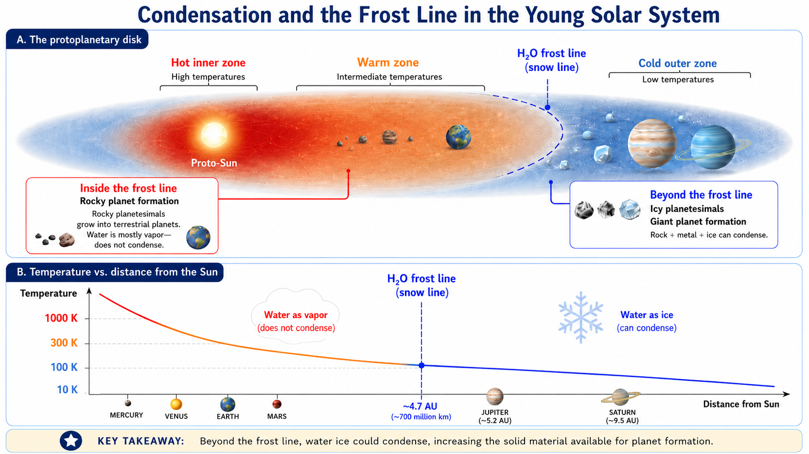
Fig. 3.46 This course-created schematic shows how temperature controlled condensation in the young Solar System. Inside the frost line, rock and metal could condense but water mostly remained vapor. Beyond the frost line, water ice could also condense, increasing the amount of solid material available for planet formation. Image credit: Instructor-created course media.#
This difference helps explain the split between the two broad types of planets. In the inner Solar System, rocky planetesimals grew into Mercury, Venus, Earth, and Mars. In the outer Solar System, icy material helped planetesimals grow larger and faster. Once some outer cores became massive enough, they could pull in hydrogen and helium gas from the surrounding nebula, helping form giant planets.
Checkpoint
Why did the frost line make it easier for large planets to grow in the outer Solar System?
The frost line does not explain every detail by itself, but it is one of the most important links between temperature and planet formation. It shows that where a planet forms can shape what it is made of, how large it becomes, and what kinds of environments it may later offer.
3.4.8. Accretion, fragmentation, and planetesimals#
Once solid particles could condense in the disk, planet formation still had a long way to go. A dust grain is not a planet. Even a pebble is not close. The next problem is growth: small solid particles must become larger bodies without being destroyed faster than they build up.
The first solid particles in the young Solar System were microscopic. Because they formed inside a rotating disk, many of them followed similar paths around the young Sun. That matters because particles moving in nearly the same direction and at nearly the same speed can collide gently. A gentle collision may allow grains to stick together, especially when tiny surface forces and irregular shapes help particles cling to one another. This sticking process is called accretion.
Not every collision builds something larger. If two bodies hit each other too fast, the collision can break them apart instead. This destructive process is called fragmentation. Planet formation is therefore not a smooth assembly line where dust automatically becomes planets. It is a competition. Some collisions add material, while other collisions grind material down or scatter it into smaller fragments.
The two visuals below show the basic competition. The course-created diagram separates the idea into accretion and fragmentation. The NASA visualization shows a later disk stage, where growing bodies have begun shaping the disk and clearing gaps.
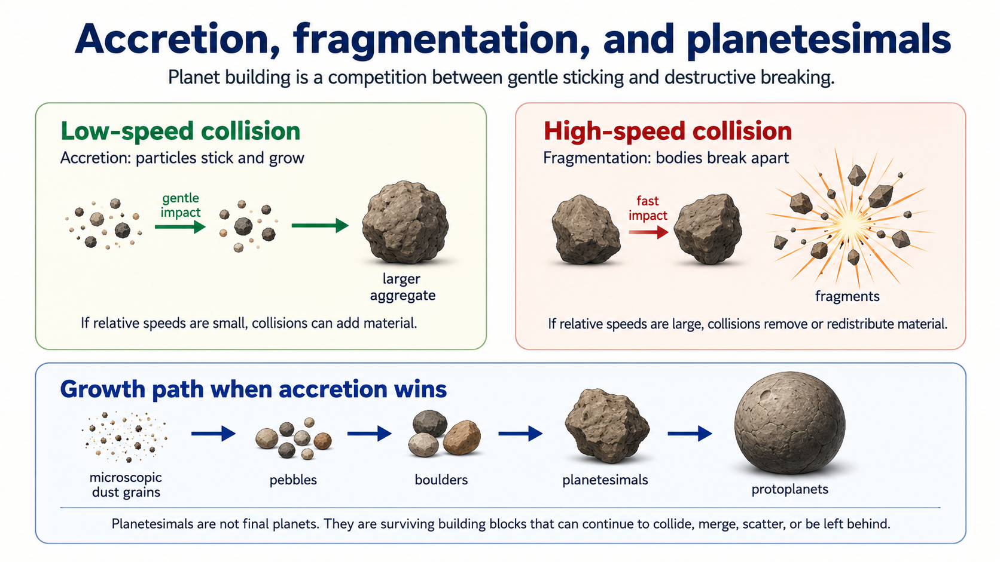
Fig. 3.47 This course-created schematic shows the basic competition in early planet formation. Low-speed collisions can allow particles to stick and grow by accretion, while high-speed collisions can fragment bodies into smaller pieces. The lower sequence shows the general growth path when accretion wins often enough: dust grains, pebbles, boulders, planetesimals, and eventually protoplanets. Image credit: Instructor-created course media.#

Fig. 3.48 This NASA visualization shows a later stage in which collisions within a disk have formed rocks that act as planetary building blocks. As larger bodies grow, they begin to shape the disk and clear material from their orbital paths. Image credit: NASA Scientific Visualization Studio / NASA/JPL-Caltech, NASA media.#
When accretion wins often enough, the growing objects become planetesimals. The word literally means “pieces of planets,” which is a useful way to think about them. Planetesimals are not finished planets. They are the surviving building blocks large enough to keep participating in planet formation through collisions, gravity, and orbital interactions.
As some planetesimals became larger than others, gravity became more important. A larger body has more mass, so it can pull in nearby smaller bodies more effectively. This creates a feedback loop: growth makes gravity stronger, and stronger gravity makes further growth easier. In the inner Solar System, this process eventually produced many rocky protoplanets, roughly Moon-sized to Mars-sized bodies, that continued colliding and merging.
This stage was not gentle in the everyday sense. A collision between growing worlds can release enormous energy. Some impacts added mass. Some stripped material away. Some changed rotation rates, tilted axes, or created debris disks. Earth’s Moon likely formed from a giant impact between early Earth and another large body, so even a world that later becomes habitable can have a violent formation history.
The timescale is also important. Planet formation did not require billions of years just to begin. The main growth of solid bodies occurred within the first few million to tens of millions of years. That is short compared with the age of the Solar System, but long compared with human experience. The early Solar System changed from dust and gas into a system of growing worlds while the young Sun and its disk were still evolving.
Checkpoint
Why does planet formation require both sticking collisions and survival against destructive collisions?
This section explains how the terrestrial planets could begin forming from condensed rock and metal. The next step is to look farther from the Sun, where ice changed the growth process. Beyond the frost line, there was more solid material available, and that helped some growing bodies become massive enough to collect gas directly from the nebula.
3.4.9. Leftovers, chaos, and clearing the nebula#
Nebular theory explains the major trends, but it does not say that every piece of the Solar System became part of a planet. Planet formation is inefficient. Some planetesimals collided and grew, some were shattered, and many simply remained as leftover material.
The leftover material matters because it preserves clues about where it formed. Rocky planetesimals left over from the warmer inner Solar System are connected to asteroids. Icy planetesimals left over from colder regions are connected to comets, Kuiper Belt objects, and the distant Oort Cloud. These small bodies are not just debris in the dismissive sense. They are evidence from the construction process.
The Solar System was also chaotic. Once large bodies formed, their gravity could scatter smaller bodies into new orbits. Near-miss encounters could send planetesimals inward, outward, or even out of the Solar System entirely. Some large collisions changed planets in dramatic ways. A giant impact may have helped form Earth’s Moon, and another major event may have tilted Uranus. Captured moons, retrograde orbits, unusual tilts, and leftover belts all point to a Solar System that was orderly in its broad pattern but messy in the details.
The visuals below connect three parts of the story: leftovers, chaotic collisions, and the final clearing of the gas-rich nebula.

Fig. 3.49 The Kuiper Belt and Oort Cloud are useful reminders that not all planetesimals became planets. The Kuiper Belt is a disk-like region of icy leftovers beyond Neptune, while the Oort Cloud is a much larger shell of comet-like bodies surrounding the Solar System. Image credit: NASA, ESA, and A. Feild via ESA/Hubble, NASA/ESA/Hubble media.#

Fig. 3.50 A giant impact is the leading explanation for the origin of Earth’s Moon. This kind of event shows why planet formation should not be imagined as calm assembly. Large impacts could add material, remove material, create moons, change rotation, and alter a planet’s later history. Image credit: NASA Science, Moon Formation, NASA media.#

Fig. 3.51 This illustration is not our own young Sun, but it shows a related idea: young stars and their disks can drive winds and outflows that move material around. In our Solar System, sunlight and the Solar wind helped clear remaining gas and dust from the nebula after planets and smaller bodies had begun forming. Image credit: NASA, ESA, CSA, Elizabeth Wheatley/STScI via NASA Webb, NASA/ESA/CSA/STScI media.#
The final question is what happened to the original nebula. The young Sun did not simply sit quietly at the center of the disk. It emitted light and a stream of charged particles called the Solar wind. Together, radiation and the Solar wind pushed on gas and dust. Over time, much of the remaining gas was cleared away.
That clearing matters because gas cannot build giant planets forever. Once the nebular gas was gone, a growing planet could no longer collect large amounts of hydrogen and helium directly from the disk. The basic architecture of the Solar System was mostly set within the first few million to tens of millions of years, even though impacts, scattering, and orbital changes continued afterward.
Checkpoint
Why does nebular theory explain broad Solar System patterns without making the Solar System perfectly orderly?
For astrobiology, this messy ending is important. Planet formation seems to be a natural part of star formation, which is encouraging for the search for planets elsewhere. But the details can vary. A system can form planets and still end up with different arrangements, different impact histories, different moons, and different chances for long-term habitability.
3.4.10. Implications for life in the universe#
Nebular theory gives us one of the most important pieces of good news in astrobiology: planets should be common. If planets form naturally from the same disks that form stars, then planet formation is not a rare accident. Stars are forming throughout the Galaxy, and young stars are often surrounded by disks of gas and dust. That means the raw process that made the Solar System should also happen around many other stars.
The good news has a limit. Nebular theory predicts that planets should form, but it does not predict that every planetary system should look like ours. Exoplanet discoveries have shown that many systems are very different from the Solar System. Some stars have giant planets orbiting extremely close to the star. Some have compact systems of several planets packed inside orbits smaller than Earth’s. Some may have planets that formed in one region and later migrated somewhere else.
This matters because the search for life is not only a search for planets. It is a search for planets with the right histories. A planet’s present location is important, but it is not the whole story. A world may have formed dry and later received water-rich material. A promising rocky planet may have been disrupted by migrating giant planets. A moon may become interesting because it formed around, or was captured by, a giant planet. Planetary systems are not static diagrams. They are histories.
Planet migration is one reason those histories can become complicated. In a young system, planets can exchange angular momentum with gas, dust, planetesimals, and other planets. A growing giant planet can reshape the disk around it. It can scatter smaller bodies inward or outward. It can change the amount of material available for rocky planet formation. It can also disturb worlds that might otherwise have grown into stable terrestrial planets.
Models are tools, not defaults
The Grand Tack, Nice model, and Early Instability model are not laws of nature. They are scientific models: structured attempts to explain evidence using gravity, migration, scattering, collisions, and disk evolution. A model can become widely used because it is familiar and has appeared in many papers, but that does not mean it is always the right model for a new problem. Before adopting any model, scientists should ask what evidence the model was designed to explain, what assumptions it requires, and whether newer models explain the same evidence with fewer or better-supported assumptions.
The animations below show three related model ideas. The Grand Tack is useful as a historical and conceptual example of giant-planet migration, but it should not be treated as the default choice just because it is familiar. The Nice model remains important for understanding the outer Solar System. The Early Instability model is currently more compelling for this chapter’s purpose because it keeps the useful giant-planet instability idea while reducing the need for Jupiter to make a special inward-then-outward tack.

Fig. 3.52 The Grand Tack model proposes that Jupiter first migrated inward and then reversed direction after Saturn caught up, similar to a sailboat changing direction by tacking. This model can help produce a small Mars by truncating the rocky planet-forming disk, but it requires a specific migration history for Jupiter and Saturn. Because Early Instability models can address many of the same inner Solar System issues without requiring this tack, the Grand Tack should be treated here as a useful but less favored model, not as a default assumption. Image credit: Sean Raymond / planetplanet.net, non-free research animation used here for educational commentary.#

Fig. 3.53 The Nice model is a major model for the early evolution of the outer Solar System. It proposes that the giant planets began in a more compact arrangement, interacted with a disk of leftover planetesimals, spread outward, and may have ejected an extra ice giant. This model remains useful because it can explain several outer Solar System features, including the Kuiper Belt, Trojan asteroids, irregular moons, and the present orbits of the giant planets. Image credit: David Nesvorný/SWRI via The Planetary Society, non-free animation used here for educational commentary.#

Fig. 3.54 The Early Instability model keeps the useful giant-planet instability idea but moves the instability early in Solar System history, near the end of the gas-disk stage. In this model, the instability helps deplete the asteroid belt and Mars-forming region while leaving Earth and Venus less strongly affected. This makes the model especially useful for connecting the outer Solar System instability to the small mass of Mars and the structure of the inner Solar System. Image credit: Sean Raymond / planetplanet.net, non-free research animation used here for educational commentary.#
A model should not be chosen because it is famous or convenient. It should be chosen because its assumptions match the question being asked and because it explains the relevant evidence better than competing models. That is a major part of how science works. Models are not just stories; they are tools for organizing evidence, making predictions, and finding out where our explanations fail.
For astrobiology, these models matter because habitability depends on system history. A rocky planet may need water delivery, long-term orbital stability, a protective or persistent atmosphere, and enough time for chemistry and biology to develop. Giant planets may help deliver water-rich material in some situations, but they may also scatter material, destabilize orbits, or prevent rocky planets from forming in the first place. The same physical laws can produce many different outcomes.
Checkpoint
Why should scientists avoid choosing a planet-formation model only because it is familiar?
The main lesson is not that any one model must be exactly correct. The deeper lesson is that planetary systems have histories. To search for life elsewhere, we need more than a list of planets. We need to understand how those planets formed, moved, collided, gained or lost water, kept or lost atmospheres, and remained stable long enough for life to become possible.
3.5. Before moving on#
Check your understanding
Before continuing, make sure you can answer these questions in your own words:
How do the size, age, and chemical history of the universe make the search for life scientifically reasonable without proving that life exists elsewhere?
Why are atoms, molecules, energy, and light all necessary pieces of evidence when scientists study distant worlds?
How does nebular theory explain both the broad order of the Solar System and the messy exceptions that make planetary systems hard to predict?
Why should models such as the Grand Tack, Nice model, and Early Instability model be treated as scientific tools rather than as guaranteed histories?
Why does finding many planets not automatically mean finding many inhabited worlds?
These questions are not a summary of the chapter. They are a check on whether the main ideas are connected in your mind.